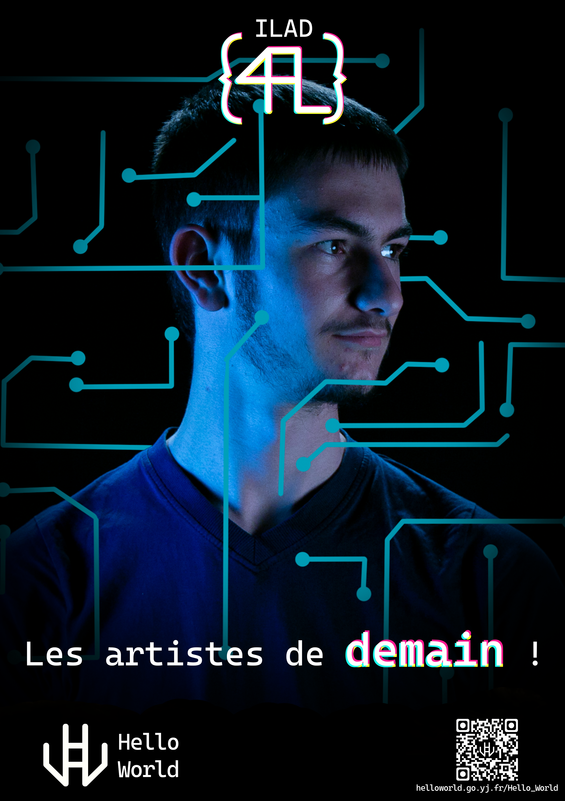
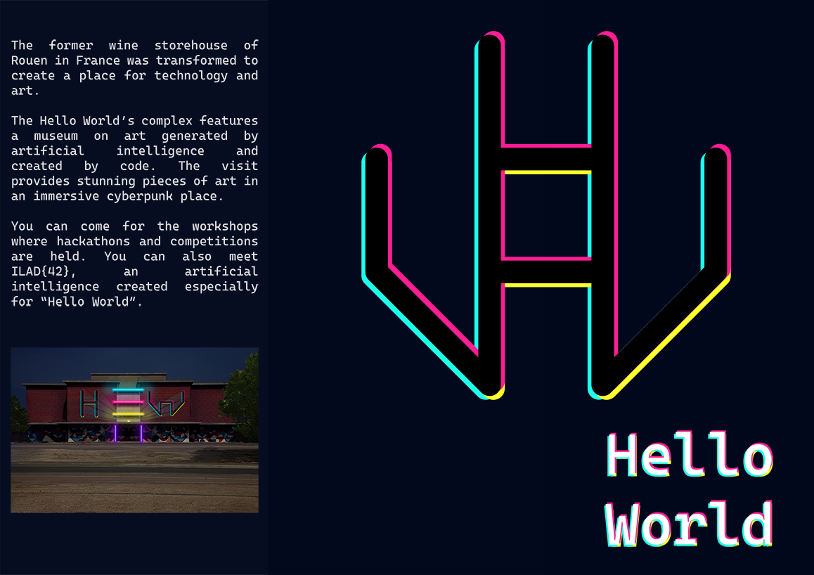
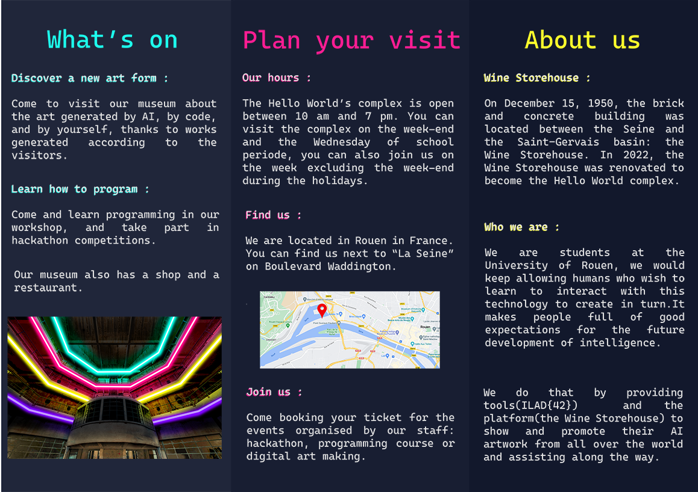
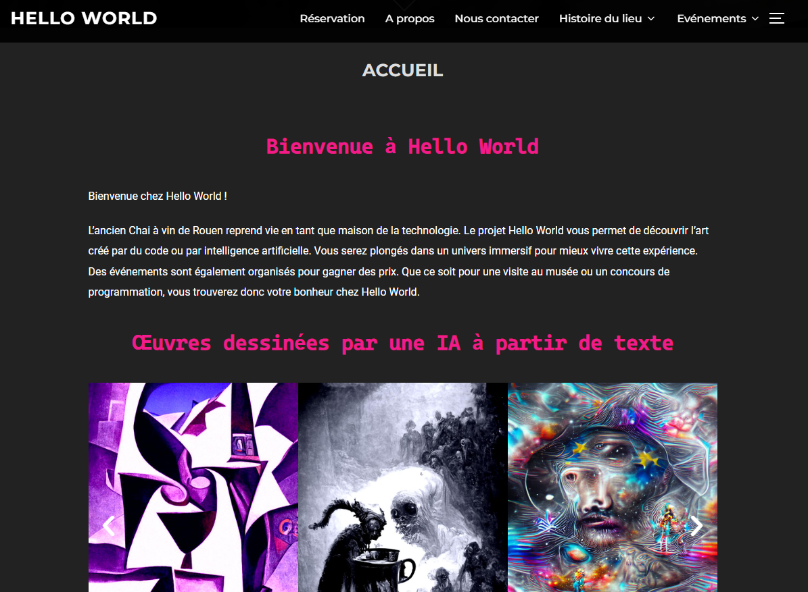
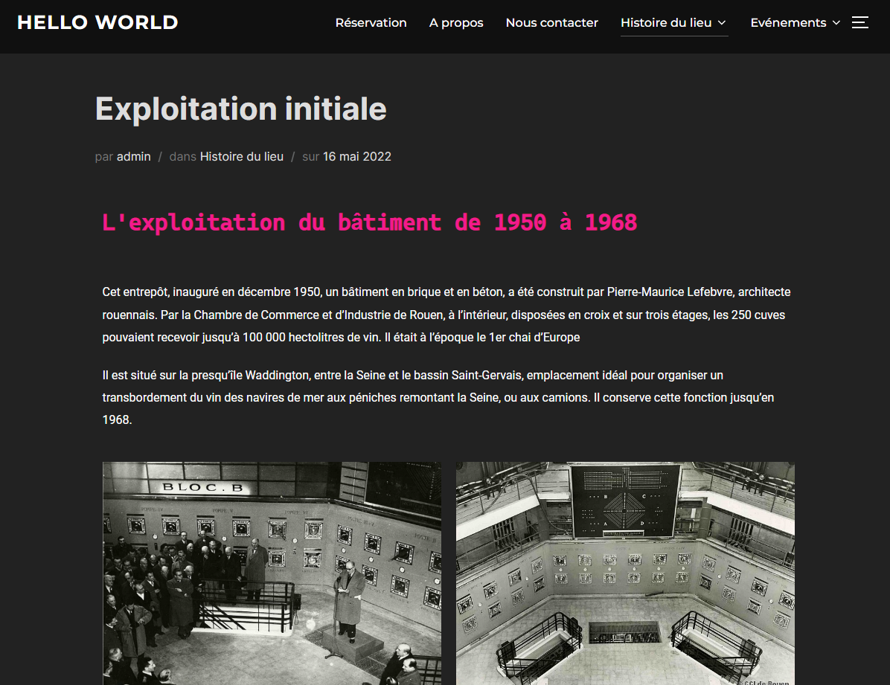
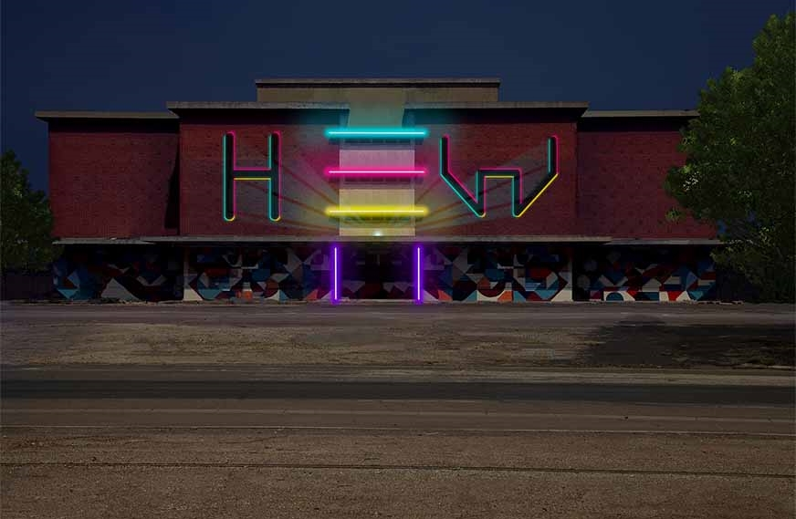
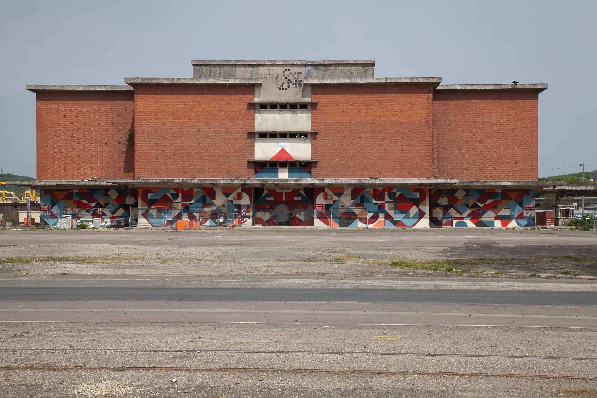

Présentation du projet
Le projet Hello World était un projet très complet, il a été fait à la fin de la première année à l'IUT. Il a été réalisé en groupe de quatre. Je vais expliquer le projet en montrant uniquement les éléments sur lesquels j'ai été personnellement impliqué.
Nous devions imaginer une manière de réhabiliter l'ancien Chai à vin de Rouen et créer une stratégie de communication ainsi que son identité graphique. Le thème était les nouvelles technologies, c'est pourquoi nous avons décidé de faire une présentation sur l'intelligence artificielle. Nous devions rendre plusieurs livrables tels que : une charte graphique, un flyer en anglais, des affiches et une vidéo de présentation. D'autres éléments tels qu'une note d'intention, un storyboard ou encore du compositing devaient être rendus.
Logos
J'ai 21 ans et je suis étudiant en deuxième année à l'IUT de Rouen. J'étudie la programmation web ainsi que le graphisme dans la formation Métiers du Multimédia et de l'Internet.
J'ai 21 ans et je suis étudiant en deuxième année à l'IUT de Rouen. J'étudie la programmation web ainsi que le graphisme dans la formation Métiers du Multimédia et de l'Internet.
Affiche
Hello World est le nom du lieu où arrive Ilad{42}, c'est une intelligence artificielle qui va intéragir avec les visiteurs. Voici une affiche que j'ai réalisé. Les traits bleus forment une carte graphique, elle met en avant l'aspect technologique. Ils passent devant et derrière le visage pour donner de la profondeur à l'affiche.
Flyer
 Le flyer devait être en anglais, nous avons tous les quatre participés à son écriture. J'ai personnellement écrit la partie à gauche du logo. La typographie " Cascadia " a été choisi car elle est utilisé par Visual Studio Code. On peut retrouver les couleurs du logo dans les titres et les aberrations chromatique pour les titres des sous-parties.
Site web
 Le site web a été pensé en équipe lors d'un brainwashing. On a réfléchi au contenu ainsi qu'à sa disposition pour que l'expérience utilisateur soit la plus agréable possible. Il a été réalisé avec Wordpress
Compositing
 Le compositing du lieu permet de se projeter. On peut ainsi visualiser à quoi ressemblerait le site si des rénovations avaient lieu. Pour Hello World, je me suis occupé du compositing de l'extérieur. Le H et le W du logo se retrouve sur la façade. J'ai aussi mis des néons pour représenter les différents étages à l'intérieur. La porte est mise en avant avec des néons violets.
Charte graphique
La charte graphique nous a permis de rester cohérent. La création et l'utilisation du logo, et des affiches nous a été facilitées par ce document. Elle a été créée très tôt dans la réalisation du projet. Il fallait de manière claire réussir à faire comprendre les règles de nos créations ainsi que de présenter les logos et les couleurs.
Mes autres projets
- Billetterie
- Covid
- MMI Foundry
- Pasta Fresca
- Pictogrammes
- Galerie